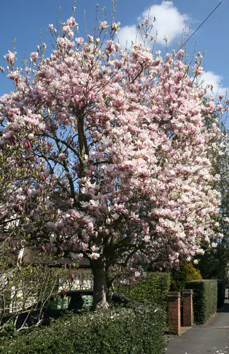

Chanya
Hazy Magnolia—Coding Diary
Love is low-key freaking me out, Imma code it off
Project Diaries
"Koi Jishaku" (恋磁石 Love Magnet)
"Memory" (メモリー Memorī)
"Nexus"
"Connect" (コネクト Konekuto)
"Promise" (プロミス Puromisu)
"Naisho no Hanashi" (ナイショの話 Secret Conversation)
"Treasure"
"Graduation"

"Sayonara wa Iwanai" (サヨナラは言わない I Won't Say Goodbye)